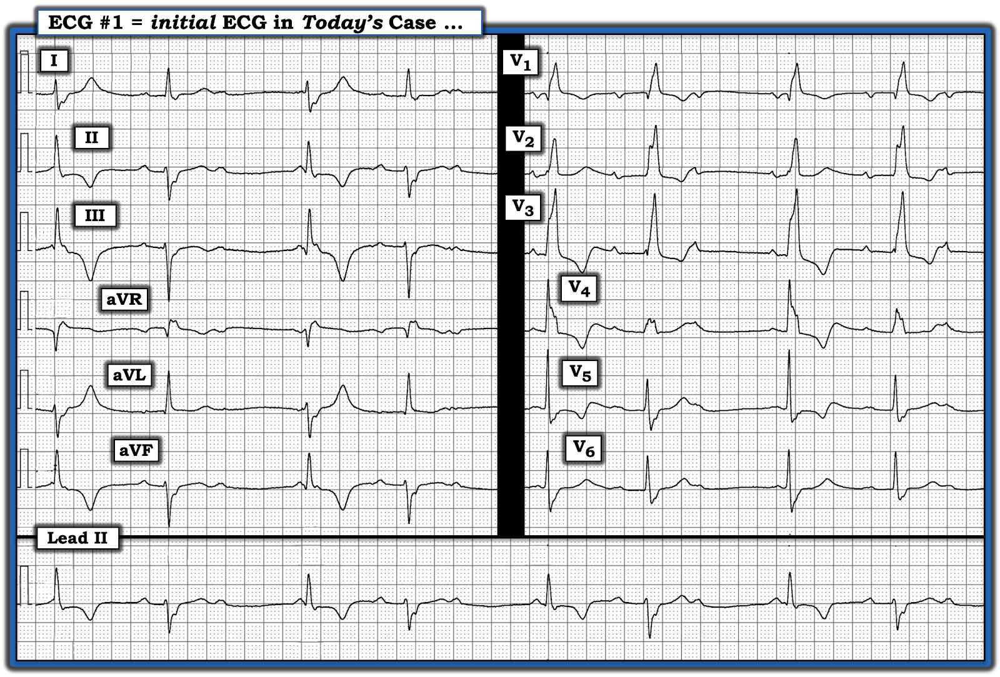
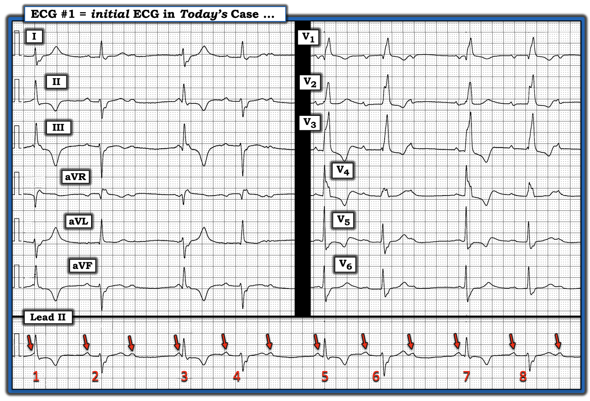
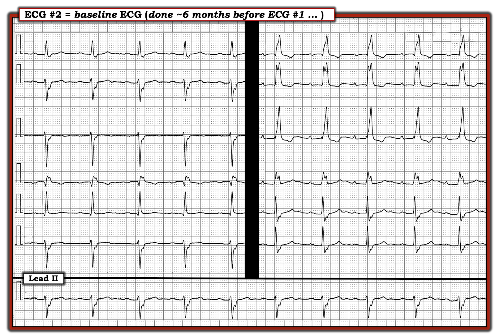
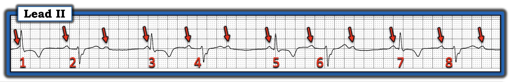
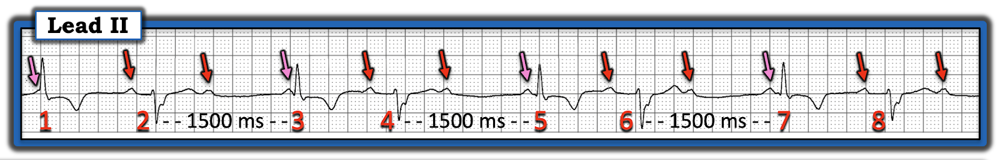
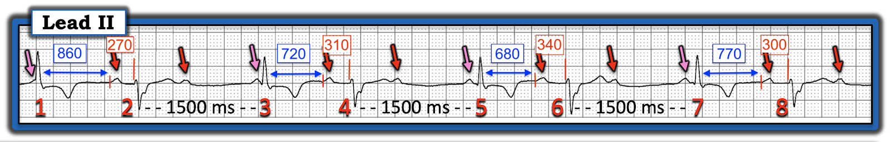
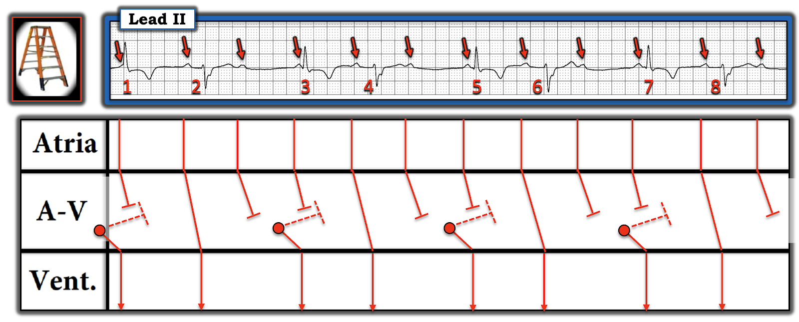

ECG Blog #484 — Cái gì không bị blốc?
Điện tâm đồ ở Hình-1 được ghi từ một người đàn ông ngoài 80 tuổi, đã biết có bệnh mạch vành — đến khám theo dõi định kỳ.
- Bệnh nhân được phát hiện có mạch không đều — nhưng ông không có triệu chứng và huyết áp bình thường.
- Ông không dùng bất kỳ thuốc làm chậm tần số tim nào ...
CÂU HỎI:
- Bạn diễn giải nhịp ở Hình-1 như thế nào?
- — Cần điều trị gì?
- Vượt ra ngoài phần cốt lõi (Beyond-the-Core): Nhịp thú vị của ca hôm nay hóa ra còn thú vị hơn (và phức tạp hơn) so với tôi nhận ra lúc đầu.
- GỢI Ý: Có khoảng PR nào lặp lại không? Nếu không — Bạn có giải thích được vì sao không?


=================================
Tôi đã tiếp cận bản ghi hôm nay như thế nào:
Tôi nhận thấy các bước đơn giản là đánh số các nhát và ghi nhãn sóng P hữu ích đến kinh ngạc trong việc: i) Tạo thuận lợi cho việc trao đổi với các nhân viên y tế khác về những gì chúng ta nghĩ đang diễn ra (vì chúng ta có thể gọi các nhát theo số!); và, ii) Ghi nhãn sóng P giúp dễ dàng hơn rất nhiều để nhận ra mối liên hệ (nếu có) giữa sóng P và các phức bộ QRS lân cận.
- Có nhịp theo nhóm (group beating) trên dải nhịp dài chuyển đạo II ở Hình-1 (tức là các khoảng R-R ngắn hơn rồi dài hơn xen kẽ nhau). Tổng cộng — có 4 nhóm, mỗi nhóm 2 nhát ( = các nhát #1,2; 3,4; 5,6; và 7,8).
- Sóng P có hiện diện (các mũi tên ĐỎ ở Hình-2). Các sóng P này có vẻ khá đều (dễ nhận ra bằng cách "dõi theo" khoảng cách gần như bằng nhau giữa các mũi tên ĐỎ ở Hình-2).
- Có nhiều sóng P hơn phức bộ QRS (tức là Các sóng P mũi tên ĐỎ rơi vào khoảng giữa của mỗi khoảng R-R dài hơn đều không được theo sau bởi phức bộ QRS nào). Như vậy, dù nhịp nhĩ khá đều — vẫn có những sóng P xoang đúng lúc mà không được dẫn truyền. Điều này xác định sự hiện diện của một dạng nào đó của blốc AV độ 2 hoặc độ 3.
- ĐIỂM THEN CHỐT (PEARL) #1: Chúng ta có thể biết ngay lập tức rằng nhịp ở Hình-2 không phải blốc AV độ 3 — vì nhịp thất không đều (trong khi nhịp thất thường đều khi blốc AV hoàn toàn — vì phần lớn trường hợp, nhịp "thoát" trong blốc AV hoàn toàn có xu hướng đều một cách đáng ngạc nhiên).
- ĐIỂM THEN CHỐT #2: Chúng ta có thể nghi ngờ ngay lập tức rằng có một dạng nào đó của blốc AV độ 2 kiểu Wenckebach — vì có nhịp theo nhóm (điều rất hay gặp trong các nhịp Wenckebach).
- ĐIỂM THEN CHỐT #3: Điều quan trọng là nhận ra rằng tần số thất chung ở Hình-2 là chậm (Dải nhịp dài chuyển đạo II dài 10 giây = 10/60 giây, tức 1/6 phút. Có 8 nhát trong dải nhịp 10 giây này — và 6 X 8 = 48 nhát/phút). Riêng mức độ nhịp chậm này — đã có thể là vấn đề ở một bệnh nhân ngoài 80 tuổi.
CÂU HỎI:
- Còn phức bộ QRS ở Hình-2 thì sao?
- Vì sao QRS rộng?
- Vì sao hình dạng QRS thay đổi cách một nhát?
- Có nhát nào ở Hình-2 được dẫn truyền xuống thất không?


================================
TRẢ LỜI:
Hình dạng QRS ở Hình-2 của mỗi nhát trên các chuyển đạo ngực — phù hợp với RBBB (blốc nhánh phải — Right Bundle Branch Block) vì: i) Có dạng chủ yếu dương (qR) ở chuyển đạo V1 bên phải; và, ii) Ở chuyển đạo V6 bên trái — có sóng R chủ yếu dương, theo sau là sóng S tận rộng.
- ĐIỂM THEN CHỐT #4: Hình dạng QRS ở các chuyển đạo chi luân phiên giữa dẫn truyền LPHB (blốc phân nhánh trái sau — Left Posterior HemiBlock) và LAHB (blốc phân nhánh trái trước — Left Anterior HemiBlock).
- Lưu ý rằng mỗi phức bộ QRS số lẻ ( = các nhát #1,3,5,7) đều biểu hiện hình dạng LPHB (rS ở chuyển đạo I; qR ở các chuyển đạo II,III).
- Mỗi phức bộ QRS số chẵn ( = các nhát #2,4,6,8) đều biểu hiện hình dạng LAHB (Rs ở chuyển đạo I; rS ở các chuyển đạo II,III).
- ĐIỂM THEN CHỐT #5: Trong những ca như ca này, khi nhịp tim quá khó — người ta có xu hướng bỏ qua việc đánh giá điện tâm đồ 12 chuyển đạo để tìm các thay đổi cấp tiềm ẩn! Lưu ý ở các chuyển đạo chi — có sóng T đảo ngược sâu ở các chuyển đạo dưới với các nhát số lẻ #1 và 3 — và sóng T dương cao quá mức (tối cấp?) ở các chuyển đạo I và aVL. Ở các chuyển đạo ngực — các nhát số lẻ #5 và 7 cho thấy sóng ST-T chênh xuống kéo dài sang tận chuyển đạo V5 phía bên (điều không nên thấy khi chỉ có dẫn truyền RBBB đơn thuần). Dù không đặc hiệu — những thay đổi sóng ST-T bất thường này có thể phản ánh thiếu máu cục bộ và/hoặc nhồi máu gần đây là nguyên nhân tiềm ẩn gây ra các rối loạn dẫn truyền của bệnh nhân này!
Tổng Hợp Lại Tất cả:
Bệnh nhân hôm nay là một người đàn ông ngoài 80 tuổi không có triệu chứng, đã biết có bệnh mạch vành — đến khám theo dõi "định kỳ".
- Lúc đầu tôi diễn giải nhịp hôm nay là một dạng nào đó của blốc AV độ 2, có lẽ là Mobitz loại I (còn được gọi là Wenckebach AV).
- Lúc đầu tôi nghĩ rằng vì khoảng PR đứng trước các nhát #2,4,6 và 8 trông như bằng nhau (dù kéo dài >0.20 giây) — nên các nhát này đã được dẫn truyền xuống thất.
- Khoảng PR đứng trước các nhát #1,3,5 (và có lẽ cả nhát #7) — trông quá ngắn để có thể dẫn truyền. Điều này gợi ý rằng các chu kỳ Wenckebach đang bị kết thúc bởi các nhát "thoát" bộ nối #1,3,5,7.
- Có nhịp chậm đáng kể (Tần số thất chung của nhịp này = 48/phút).
- Các phức bộ QRS biểu hiện một dạng blốc hai phân nhánh luân phiên (RBBB/LPHB luân phiên với RBBB/LAHB).
- Xét tổng thể tất cả các dấu hiệu trên (dù bệnh nhân không có triệu chứng) — người đàn ông lớn tuổi này có nhịp chậm đáng kể kèm dấu hiệu của bệnh hệ thống dẫn truyền nặng (tức là blốc AV độ 1 + RBBB + LAHB và LPHB luân phiên). Vì vậy — tôi nghi ngờ rằng có lẽ sẽ sớm cần đến máy tạo nhịp vĩnh viễn.
- Điểm MẤU CHỐT: Cần ghi lại điện tâm đồ và đo Troponin nhiều lần trước khi đặt máy tạo nhịp để loại trừ một biến cố gần đây (đặc biệt khi có các bất thường sóng ST-T đã mô tả ở ĐIỂM THEN CHỐT #5 bên trên).
=====================================
Ca bệnh tiếp diễn:
Đã tìm được một điện tâm đồ trước đó, ghi cách đây 6 tháng (Xem Hình-3).
CÂU HỎI:
- Chúng ta học được gì từ điện tâm đồ trước đó này?


=================================
TRẢ LỜI:
Điện tâm đồ trước đó của bệnh nhân hôm nay (được trình bày ở Hình-3) — cho thấy nhịp xoang kèm blốc AV độ 1 và RBBB/LAHB.
- Không có dấu hiệu dẫn truyền LPHB — và không có biểu hiện thay đổi sóng ST-T cấp trên bản ghi trước đó này.
SUY NGHĨ CỦA TÔI:
Việc bệnh nhân này trước đây đã có blốc AV độ 1 + RBBB/LAHB — gợi ý đây là rối loạn dẫn truyền "nền" của ông.
- Việc điện tâm đồ hiện tại của bệnh nhân này nay cho thấy dẫn truyền LPHB thay vì dẫn truyền LAHB ở các nhát số lẻ trong Hình-1 — có thể là do một trong hai: i) BBB pha 4 hay BBB "phụ thuộc nhịp chậm" — vì dẫn truyền LPHB chỉ thấy sau một khoảng R-R đứng trước dài hơn (Xem Bình luận của tôi trong bài ngày 17 tháng 8 năm 2020 trên Dr. Smith's ECG Blog); — hoặc — ii) Một biểu hiện thực sự của dẫn truyền blốc phân nhánh luân phiên do bệnh ba phân nhánh thực sự.
- Dù thế nào — thận trọng thì nên kiểm tra các bản ghi liên tiếp và Troponin để loại trừ một biến cố gần đây (do có sóng ST-T bất thường ở các nhát số lẻ trong Hình-1).
=================================
Vượt ra ngoài phần cốt lõi: Và rồi tôi nhìn kỹ hơn ...
Hãy NHÌN lại một lần nữa bản ghi ban đầu của ca hôm nay ...
- Để thuận tiện cho việc đánh giá nhịp — tôi chỉ trình bày dải nhịp dài chuyển đạo II ở Hình-4. Tôi giữ nguyên các sóng P xoang có mũi tên ĐỎ từ Hình-2.
CÂU HỎI:
- Khoảng PR trước các nhát #2,4,6 và 8 có bằng nhau không? (như tôi nghĩ lúc đầu ở Hình-2?).
- Khoảng R-R trước các nhát #3,5 và 7 có bằng nhau không?
- — Câu trả lời cho 2 câu hỏi này có thể mang ý nghĩa gì?
- Điểm cộng: Bạn có nghĩ rằng sóng P nào ở Hình-4 đang được dẫn truyền xuống thất không?


TRẢ LỜI:
- Câu dễ trả lời nhất trong các câu hỏi trên liên quan đến độ dài khoảng R-R trước các nhát #3,5 và 7.
- CÓ — Khoảng R-R trước các nhát #3,5 và 7 là bằng nhau. Điều này cho chúng ta biết rằng các nhát #3,5 và 7 nhiều khả năng là các nhát “thoát” bộ nối (tức là Như trình bày ở Hình-5 — khoảng R-R đứng trước các nhát #3,5,7 đo được 7.5 ô lớn = 1500 msec. — tương ứng với tần số thất 300 ÷ 7.5 = 40/phút = một tần số nằm trong khoảng 40-60/phút được kỳ vọng ở nhịp thoát bộ nối).
- Thêm một bằng chứng ủng hộ các nhát #1,3,5,7 đều là nhát "thoát" bộ nối — là các khoảng PR đứng trước những nhát này đều khác nhau, đồng thời đều quá ngắn để dẫn truyền. Nói cách khác — trước khi bất kỳ sóng P mũi tên HỒNG nào có cơ hội dẫn truyền xuống thất, 1500 msec. đã trôi qua — đó là khoảng thời gian kích hoạt một ổ thoát nút AV (được "cài" ở tần số thoát ~40/phút) phát ra một nhát thoát bộ nối.


ĐIỂM THEN CHỐT NÂNG CAO #6: Thay vì các nhát #1,3,5,7 là nhát "thoát" từ vị trí bộ nối — các nhát này có thể là một ổ "thoát" xuất phát từ phân nhánh trái trước (thường biểu hiện hình dạng RBBB/LAHB với tần số thoát ≤40/phút).
=====================================
CÂU HỎI:
- Các khoảng PR trước các nhát #2,4,6 và 8 có thực sự bằng nhau không? (như tôi nghĩ lúc đầu khi mới nhìn bản ghi này?).
TRẢ LỜI:
- KHÔNG. Như trình bày ở Hình-6 — các con số ĐỎ cho biết số đo chính xác của các khoảng PR đứng trước các nhát #2,4,6 và 8 lần lượt bằng 270, 310, 340 và 300 msec.
- Vì vậy — Không khoảng PR nào trong rối loạn nhịp hôm nay lặp lại. Gần như luôn luôn — các nhịp Wenckebach AV được xác định nhờ nhận ra "Dấu chân của Wenckebach" — trong đó 2 "Dấu chân" hữu ích nhất là: i) Nhịp theo nhóm (điều có thấy trong ca hôm nay); và, ii) Sự lặp lại của ít nhất một số khoảng PR (điều cho chúng ta biết có dẫn truyền của ít nhất một số sóng P).
- Ca hôm nay bất thường — vì không có khoảng PR nào bằng nhau!
ĐIỂM THEN CHỐT #7: Để diễn giải các rối loạn nhịp phức tạp — việc dùng compa đo (calipers) có thể vô cùng quý giá! Compa đo lập tức làm bạn “thông minh hơn” đồng thời tiết kiệm thời gian — vì chúng giúp xác định thời khoảng chính xác của các khoảng rất dễ dàng.
- XIN NHẤN MẠNH: Thường không cần compa đo cho việc đánh giá cơ bản các rối loạn nhịp đủ để xử trí ban đầu thích hợp (tức là Đánh giá ban đầu của tôi về nhịp chậm trong ca hôm nay, kèm một dạng nào đó của dẫn truyền Wenckebach độ 2 có các nhát thoát bộ nối — là quá đủ cho việc xử trí ban đầu bệnh nhân hôm nay). Nhưng việc diễn giải chính xác cơ chế của nhịp hôm nay gần như không thể thực hiện nếu không dùng compa đo để đo và so sánh chính xác các khoảng PR và R-R — như trình bày dưới đây ở Hình-6.
ĐIỂM THEN CHỐT #8: Như đã nêu ở trên, và như đã bàn chi tiết trong PHẦN BỔ SUNG của ECG Blog #458 (cũng như trong nhiều bài Blog khác) — Wenckebach AV dễ nhận ra nhất khi thấy một hoặc nhiều "Dấu chân của Wenckebach". Trong số những "Dấu chân" ít được chú ý nhất — là tương quan nghịch RP/PR (RP/PR Reciprocity) (tức là Khoảng RP càng dài — nút AV càng có nhiều thời gian hồi phục, và khoảng PR của nhát kế tiếp sẽ càng ngắn).
- Việc nhận ra ca hôm nay là một dạng nào đó của blốc AV độ 2 Mobitz loại I — là một ví dụ trong đó khả năng Wenckebach AV được gợi ý nhờ nhận ra nhịp theo nhóm — rồi được xác minh bằng khái niệm tương quan nghịch PR/RP — dù không có khoảng PR nào lặp lại.
- Chúng ta thấy tương quan nghịch RP/RP ở Hình-6. Như vậy, khoảng PR ngắn nhất (tức là 270 msec. trước nhát #2) đi kèm với khoảng RP dài nhất (tức là 860 msec. ngay sau nhát #1).
- Ngược lại — khoảng PR dài nhất ( = 340 msec., trước nhát #6) đi kèm với khoảng RP ngắn nhất (tức là 680 msec. ngay sau nhát #5).
- Và, khi khoảng RP tăng dần (tức là từ 680 — lên 720 — lên 770 msec.) — khoảng PR ngắn dần (từ 340 — xuống 310 — xuống 300 msec.) — cho đến khi chúng ta thấy khoảng PR ngắn nhất ( = 270 msec.) xuất hiện cùng với khoảng RP dài nhất.
- Điểm MẤU CHỐT: Lý do các điều kiện tạo nên tương quan nghịch PR/RP xuất hiện trong nhịp hôm nay — là kết quả của loạn nhịp xoang theo pha thất (ventriculophasic) (Xem ECG Blog #344 để biết thêm về dạng loạn nhịp xoang đặc biệt này, rất hay gặp kèm theo blốc AV độ 2 và độ 3).
- XIN NHẤN MẠNH: Hiếm khi tôi cần viện dẫn nguyên lý tương quan nghịch PR/RP để chứng minh dẫn truyền Wenckebach. Ca hôm nay là một trong những lần hiếm hoi đó.


==================================
Minh họa bằng giản đồ bậc thang:
Cách TỐT NHẤT để minh họa cơ chế của nhịp hôm nay — là bằng giản đồ bậc thang (laddergram), như trình bày dưới đây ở Hình-7.
- Các vòng tròn ĐỎ nhỏ trong Tầng Nút AV làm nổi bật 4 nhát "thoát" bộ nối (các nhát #1,3,5,7).
- Dẫn truyền ngược dòng từ các nhát thoát bộ nối này ảnh hưởng đến thời điểm của các sóng P xoang tiếp theo — và chính tác động này cho phép các sóng P đó được dẫn truyền với khoảng PR liên tục thay đổi.


ĐIỂM THEN CHỐT NÂNG CAO #9: Mức độ blốc AV trong nhịp hôm nay có thể trông cao hơn so với thực tế. Chúng ta thường định nghĩa blốc AV độ 2 là blốc "mức độ cao" — NẾU thấy 2 sóng P xoang đúng lúc trở lên không dẫn truyền dù xuất hiện ở thời điểm trong nhịp có đủ cơ hội để dẫn truyền. Nhưng từ một bản ghi duy nhất được cung cấp, chúng ta không thể biết NẾU các nhát #1,3,5,7 lẽ ra có được dẫn truyền hay không NẾU nhịp không bị ngắt bởi sự xuất hiện của các nhát thoát bộ nối đúng thời điểm.
- Tôi nghi ngờ các nhát #1,3,5,7 lẽ ra đã có thể được dẫn truyền — NẾU các sóng P trước những nhát này có cơ hội (tức là thêm một chút thời gian) để dẫn truyền trước khi bị các nhát thoát bộ nối ngắt ngang.
- Điểm MẤU CHỐT: Tôi cá rằng chỉ cần theo dõi từ xa (telemetry) thêm 30-đến-60 giây là đã trả lời được câu hỏi liệu có blốc "mức độ cao" thực sự hay không — vì thời điểm thay đổi mà chúng ta thấy (kết hợp với loạn nhịp xoang theo pha thất nền) gần như chắc chắn sẽ tạo cơ hội cho các sóng P này dẫn truyền mà không bị các nhát thoát bộ nối ngắt ngang.
SUY NGHĨ CUỐI CÙNG: Tôi không biết kết cục cuối cùng của ca hôm nay. Nhưng như đã đề cập trước đó — sự kết hợp giữa một bệnh nhân cao tuổi có nhịp chậm đáng kể và bằng chứng trên điện tâm đồ về tổn thương ba phân nhánh — nhiều khả năng cuối cùng sẽ dẫn đến việc đặt máy tạo nhịp.
==========================================
Lời cảm ơn: Xin cảm ơn William Santos (từ Nadal, Brazil) đã cung cấp ca bệnh và bản ghi này.
==========================================

==============================
Các bài ECG Blog liên quan đến ca hôm nay:
- ECG Blog #185 — Hệ thống Ps, Qs, 3R của tôi để đọc nhịp.
- ECG Blog #188 — Ôn lại cách đọc và vẽ giản đồ bậc thang (kèm LINK tới hơn 120 ca — nhiều ca có minh họa tuần tự từng bước cách dựng giản đồ bậc thang).
- ECG Blog #205 — Ôn lại Cách tiếp cận hệ thống của tôi trong diễn giải điện tâm đồ 12 chuyển đạo.
================================
- ECG Blog #192 — 3 Nguyên nhân gây phân ly nhĩ thất.
- ECG Blog #191 — Phân ly nhĩ thất so với blốc AV hoàn toàn.
- ECG Blog #389 — ECG Blog #373 — để ôn lại một số ca minh họa "giải quyết vấn đề blốc AV".
- ECG Blog #236 — về một ECG Video Pearl nói về 3 loại blốc AV độ 2.
- ECG Blog #344 — ôn lại toàn diện các loại blốc AV độ 2 (Mobitz I so với Mobitz II so với blốc AV 2:1).
- ECG Blog #267 — Ôn lại bằng giản đồ bậc thang từng bước quá trình suy luận một ca Mobitz I có nhiều hơn một cách giải thích khả dĩ.
- ECG Blog #164 — Giản đồ bậc thang từng bước của Mobitz I.
- ECG Blog #195 — Phân ly nhĩ thất đồng nhịp (isorhythmic).